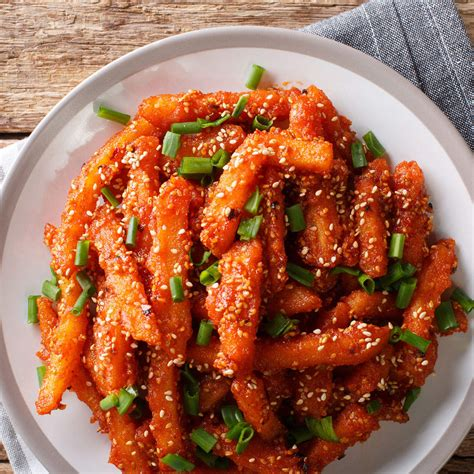

Chilly Potato

Description
Chilli Potato, a delicious starter from Indian-Chinese cuisine which is also served as a snack and an appetizer. The making process of this dish is similar to chilli paneer but this one uses potato strips instead of paneer cubes. First, the potato strips are fried until crispy and then cooked in the gravy made with tangy, hot and sweet sauces. Follow the below given recipe with step by step photos to make it at home and don’t forget to read the tips about how to keep the potato strips crispy.
Ingredients
- 2 large or 3 medium Potatoes
- 3-4 cups Water, for boiling
- 1/2 teaspoon Salt
- 1/4 cup Cornstarch(corn flour) or Rice Flour
- 1/4 cup Maida (plain flour)
- 1/4 cup + 2 tablespoons Water
- Salt, to taste
- Oil, for deep frying
- 1 tablespoon Oil
- 1 tablespoon White Sesame Seeds
- 1/2 teaspoon Red Chilli Flakes
- 1 tablespoon finely chopped Garlic
- 2 Green Chilli, cut lengthwise
- 3-4 Green Onion/ Spring Onion, sliced (keep white and green part separated)
- 1/4 cup sliced Capsicum (green bell pepper)
- Salt, to taste
- 2 tablespoons Tomato Ketchup
- 1 tablespoon Green/Red Chilli Sauce
- 1 teaspoon Soy Sauce
- 1 teaspoon Cornstarch (cornflour) + 4 tablespoons Water
- A pinch of Black Pepper Powder
Steps
- Peel the potatoes and cut them into 1/2 inch thick long strips. Cut them evenly.
- Pour 3-4 cups water in deep pot or a saucepan and put it over medium flame. Add potato strips and 1/2 teaspoon salt and bring it to a boil. Once the water starts boiling, cook the potato strips for 5-6 minutes.
- Turn off the flame. Remove the potato strips using a slotted spoon to drain excess water and transfer to a large bowl (or transfer the potato strips to a colander to drain excess water).
- Take 1/4 cup cornstarch(corn flour) or rice flour, 1/4 cup maida (plain flour) and salt in a large mixing bowl. Pour water little by little (approx. 1/4 cup + 2 tablespoons) and mix well to make thick batter.
- Add partially cooked potato strips. Mix well to coat all the potato strips evenly.
- Heat oil in a frying pan over medium flame. When the oil is medium hot, add potato strips one by one and fry them in a single or two batches (depending on the size of a frying pan).
- Fry them until crispy and light golden from outside. Remove them in a plate.
- Heat 1 tablespoon oil in a pan over low-medium flame. add 1 tablespoon white sesame seeds, 1/2 teaspoon red chilli flakes, 1 tablespoon finely chopped garlic, 2 green chilli, 3-4 sliced green onion (spring onion) (add only white part).
- Sauté them for 30 seconds over medium flame.
- Add 1/4 cup sliced Capsicum (green bell pepper) and salt. Sauté for a minute.
- Add 2 tablespoons tomato ketchup, 1 tablespoon green chilli sauce (or red chilli sauce) and 1 teaspoon soy sauce. Mix well. Turn off the flame.
- Mix 1 teaspoon cornstarch (cornflour) with 4 tablespoons water in a small bowl. Add cornstarch-water mixture.
- Mix well and cook until the mixture turns thick for 1-2 minutes over high flame. Turn off the flame.
- Add fried potato strips and a pinch of black pepper powder. Mix well.
- Add green parts of spring onion.
- Mix well. Chilli Potato is ready for serving. Serve it immediately and enjoy!
Credit: Recipe and description completely copied from here.